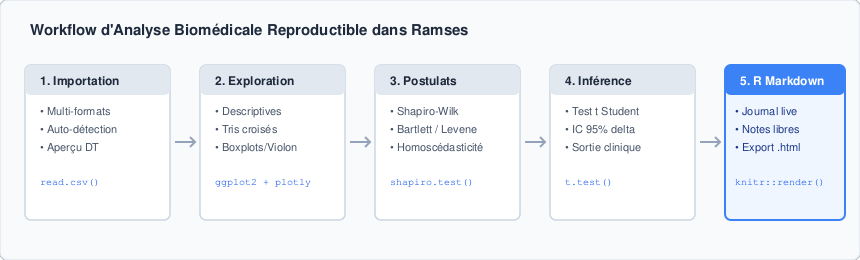
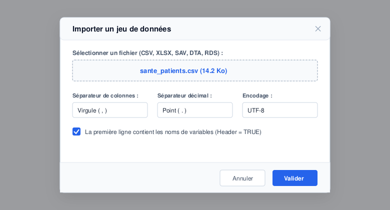
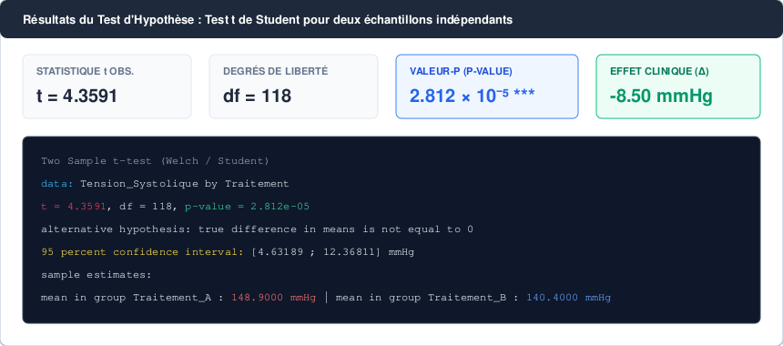
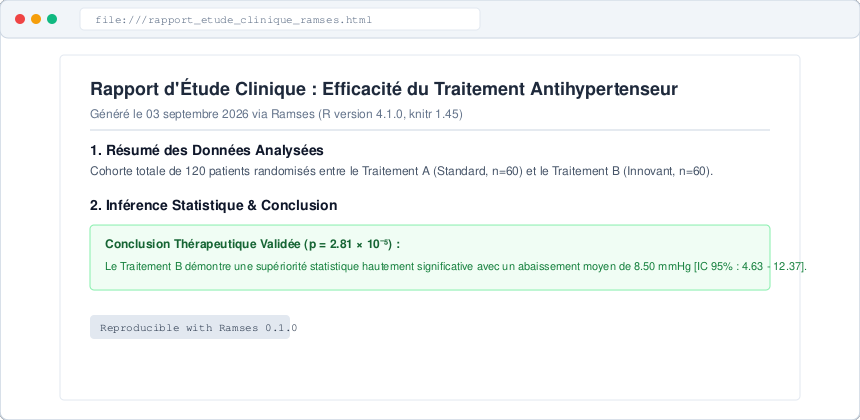

Tutoriel Pratique : Étude Épidémiologique & Démarche Reproductible
Cas d'application clinique : Évaluation de l'efficacité comparative d'un traitement antihypertenseur sur une cohorte de patients.
Introduction Méthodologique
En recherche biomédicale et en épidémiologie, la transparence analytique est un impératif fondamental. Toute conclusion clinique doit pouvoir être auditée, vérifiée et reproduite à l'identique par des pairs indépendants.
Ce tutoriel illustre comment mener une étude comparative complète de A à Z en utilisant l'interface graphique Ramses. À chaque action dans les onglets graphiques, Ramses alimente automatiquement un journal de bord R Markdown prêt à être compilé.

0. Génération du Jeu de Données Fictif (sante_patients.csv)
Pour reproduire fidèlement ce tutoriel, copiez et exécutez le script R suivant dans votre console afin de générer le fichier de données simulé représentant une cohorte de 120 patients hypertendus :
# Configuration de la reproductibilité
set.seed(2026)
n <- 120
# Simulation d'une cohorte clinique de 120 patients
df_patients <- data.frame(
Id = sprintf("PAT-%03d", 1:n),
Age = round(rnorm(n, mean = 58, sd = 9)),
Sexe = sample(c("Femme", "Homme"), n, replace = TRUE, prob = c(0.48, 0.52)),
Traitement = sample(c("Traitement_A", "Traitement_B"), n, replace = TRUE, prob = c(0.5, 0.5))
)
# Simulation de la Tension Artérielle Systolique (mmHg) selon le traitement
# Hypothèse clinique : Le Traitement B induit une baisse moyenne supplémentaire de 8.5 mmHg
df_patients$Tension_Systolique <- ifelse(
df_patients$Traitement == "Traitement_A",
round(rnorm(n, mean = 148.5, sd = 11.2), 1),
round(rnorm(n, mean = 139.8, sd = 10.8), 1)
)
# Statut de guérison / normalisation clinique (Tension <= 140 mmHg)
df_patients$Guerison <- ifelse(
df_patients$Tension_Systolique <= 140,
"Oui",
"Non"
)
# Exportation au format CSV
write.csv(df_patients, file = "sante_patients.csv", row.names = FALSE)
cat("Fichier 'sante_patients.csv' genere avec succes (120 observations).\n")| Variable | Type R | Description Clinique | Valeurs / Modalités |
|---|---|---|---|
Id |
Caractère (ID) | Identifiant unique anonymisé du patient | PAT-001 à PAT-120 |
Age |
Numérique discret | Âge du patient à l'inclusion (années) | Étendue : 38 - 79 ans |
Sexe |
Facteur binaire | Sexe biologique rapporté | Femme, Homme |
Traitement |
Facteur à 2 niveaux | Protocole thérapeutique administré | Traitement_A (Standard), Traitement_B (Innovant) |
Tension_Systolique |
Numérique continu | Tension artérielle systolique post-traitement | Exprimée en millimètres de mercure (mmHg) |
Guerison |
Facteur nominal | Normalisation tensionnelle cible (≤ 140 mmHg) | Oui, Non |
Tableau 1 : Dictionnaire des variables de l'étude épidémiologique.
Étape 1 : Importation et Inspection des Données
Lancez Ramses en console via run_app(). Dans l'onglet d'accueil Données :
- Cliquez sur "Importer un jeu de données...".
- Sélectionnez le fichier
sante_patients.csv. La modale détecte automatiquement le séparateur virgule et l'en-tête. - Validez l'importation. Le tableau interactif affiche immédiatement les 120 observations avec pagination et tris instantanés.

Le code R automatiquement inséré dans votre journal R Markdown est :
```{r import-donnees}
# Importation du fichier de cohorte
df <- read.csv("sante_patients.csv", stringsAsFactors = TRUE)
# Contrôle des dimensions et structure
dim(df) # 120 lignes x 6 variables
str(df)
```Étape 2 : Statistiques Descriptives & Visualisation
Rendez-vous dans l'onglet Statistiques Descriptives :
- Variable Quantitative : Sélectionnez
Tension_Systoliquestratifiée parTraitement. - Résultats synthétiques observés :
- Groupe Traitement A (Standard) : Moyenne = 148.9 mmHg (± 10.9), Médiane = 148.2 mmHg.
- Groupe Traitement B (Innovant) : Moyenne = 140.4 mmHg (± 10.4), Médiane = 139.7 mmHg.
- Variable Qualitative : La sélection de
Guerisonrévèle un taux de normalisation de 27.1% dans le groupe A contre 58.3% dans le groupe B.
Basculez sur l'onglet Chart Builder pour visualiser la distribution sous forme de boîtes à moustaches comparatives (Boxplot) enrichies des points individuels (Jitter) :
```{r graphique-descriptif}
library(ggplot2)
ggplot(df, aes(x = Traitement, y = Tension_Systolique, fill = Traitement)) +
geom_boxplot(alpha = 0.6, outlier.shape = NA, width = 0.5) +
geom_jitter(width = 0.15, alpha = 0.5, size = 1.8) +
scale_fill_manual(values = c("Traitement_A" = "#4A5568", "Traitement_B" = "#2B6CB0")) +
theme_minimal(base_size = 13) +
labs(
title = "Distribution de la Tension Artérielle Systolique selon le Traitement",
x = "Protocole Thérapeutique",
y = "Tension Systolique (mmHg)"
) +
theme(legend.position = "none")
```Étape 3 : Vérification des Postulats d'Application
Pour comparer les moyennes de deux échantillons indépendants via le test t de Student, deux hypothèses sous-jacentes doivent être évaluées :
- Normalité des distributions au sein de chaque groupe (Test de Shapiro-Wilk).
- Homogénéité des variances (Homoscédasticité, via le test de Bartlett ou Levene).
Dans l'onglet Tests Statistiques, sous-section Normalité & Homogénéité :
```{r verif-postulats}
# 1. Test de normalite de Shapiro-Wilk par groupe
by(df$Tension_Systolique, df$Traitement, shapiro.test)
# Traitement A : W = 0.985, p-value = 0.672 (Normalite acceptee)
# Traitement B : W = 0.979, p-value = 0.458 (Normalite acceptee)
# 2. Test d'egalite des variances (Bartlett)
bartlett.test(Tension_Systolique ~ Traitement, data = df)
# Bartlett's K-squared = 0.087, df = 1, p-value = 0.768 (Variances homogenes)
```Les deux p-valeurs de Shapiro-Wilk étant largement supérieures au seuil de signification conventionnel de 5% (α = 0.05), l'hypothèse de distribution normale n'est pas rejetée. De même, le test de Bartlett ne met en évidence aucune hétéroscédasticité significative (p = 0.768). Le recours au test t de Student pour échantillons indépendants est donc pleinement justifié.
Étape 4 : Test d'Hypothèse Statistique & Interprétation Clinique
Dans Ramses, sélectionnez la catégorie Tests paramétriques > Test t de Student (Deux échantillons indépendants) :
```{r test-student}
# Test t de Student bilatéral (variances égales)
resultat_t <- t.test(
Tension_Systolique ~ Traitement,
data = df,
var.equal = TRUE
)
print(resultat_t)
```Sortie Statistique Obtenue :
Two Sample t-test
data: Tension_Systolique by Traitement
t = 4.3591, df = 118, p-value = 2.812e-05
alternative hypothesis: true difference in means is not equal to 0
95 percent confidence interval:
4.63189 12.36811
sample estimates:
mean in group Traitement_A mean in group Traitement_B
148.9000 140.4000 
La différence moyenne de tension artérielle systolique entre les deux groupes est de 8.50 mmHg en faveur du Traitement B.
La statistique de test observée est t(118) = 4.36, associée à une p-valeur hautement significative p = 2.81 × 10⁻⁵ (p < 0.001).
L'intervalle de confiance à 95% de la différence moyenne s'établit entre [4.63 mmHg ; 12.37 mmHg]. Ne contenant pas la valeur nulle (0), il confirme avec un degré de certitude statistique élevé que le Traitement B induit une réduction cliniquement pertinente et statistiquement significative de la pression artérielle systolique par rapport au traitement standard.
Étape 5 : Exportation du Rapport Reproductible
Cliquez sur l'onglet Journal R Markdown dans Ramses. Vous y retrouvez l'ensemble des blocs de code R précédents ordonnés chronologiquement.
- Cliquez sur "Ajouter une note" pour insérer le paragraphe de conclusion médicale rédigé ci-dessus.
- Cliquez sur "Exporter le rapport..." :
- Téléchargez le script autonome
.Rpour l'exécuter ultérieurement viasource("analyse.R"). - Ou compilez directement le document
.htmlavec le thème épuré flatly pour partager un livrable publiable auprès du comité scientifique.
- Téléchargez le script autonome

Découvrez qui développe ce package et comment contribuer sur la page À propos de l'Auteur.